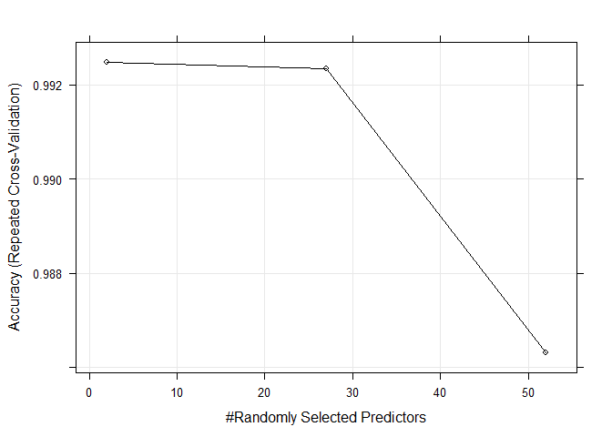

One thing that people regularly do is quantify how much of a particular activity they do, but they rarely quantify how well they do it. In this project, your goal will be to use data from accelerometers on the belt, forearm, arm, and dumbell of 6 participants.
In order to load the data, the first thing to do is load the libraries, then set a seed, in this case is 3112. After that, setting the workfolder and asking if the files exists, if they don´t, then download them.
library(caret)
library(AppliedPredictiveModeling)
library(doParallel)
library(randomForest)
# Setting the seed
set.seed(3112)
# Setting the working directory
setwd("C:/Users/Daniel/MachineLearning/Data Science/7 - Practical ML/4 - Regresion regularizada/PredictionProject1/")
# Validating if the files exists, if not, download them
if(!file.exists("pml-training.csv"))
{
download.file(url = "https://d396qusza40orc.cloudfront.net/predmachlearn/pml-training.csv",destfile = "pml-training.csv")
}
sensorTrainData <- read.csv(file = "pml-training.csv",header = TRUE)
if(!file.exists("pml-testing.csv"))
{
download.file(url = "https://d396qusza40orc.cloudfront.net/predmachlearn/pml-testing.csv",destfile = "pml-testing.csv")
}
sensorTestData <- read.csv(file="pml-testing.csv",header=TRUE)The first step was to remove the timestamps and names in the first 7 rows, because they don´t look relevant for doing predictions. Also, I removed 5 columns which their values looks pretty much empty, so I supposed they were going to interfere in the calculations. Finally, I created a function to extract only the non-NA values to make an index called notNATrain and notNATest
sensorTrainData <- sensorTrainData[-1:-7] #Removing timeStamps
sensorTrainData <- sensorTrainData[-5:-10] #Removing values usually in blank
sensorTestData <- sensorTestData[-1:-7]
sensorTestData <- sensorTestData[-5:-10]
notNATrain <- sapply(sensorTrainData, function(x)all(!is.na(x)))
notNATest <- sapply(sensorTestData, function(x)all(!is.na(x)))First, there is a data partition for the 80% of the total data. After that, I applied the partitioning using the notNA index calculated before and the new index, so I could split easily and double binded.
After that, I calculated the columns that are not relevant for the model, using the near zero variance technique. This reduced the features from 147, to 53, so it can be calculated faster; then, this new index is applied to the training and testing set to create the model.
inTrain = createDataPartition(sensorTrainData$classe, p = 0.8, list = FALSE)
training <- sensorTrainData[inTrain,notNATrain]
testing <- sensorTrainData[-inTrain,notNATrain]
sensorTestData <- sensorTestData[,notNATest]
uselessCols <- nearZeroVar(training, saveMetrics=TRUE)
training <- training[,!uselessCols$nzv== TRUE]
testing <- testing[,!uselessCols$nzv== TRUE]The first step is to parallelize, because creating this model could really take long long time, so, in my case, I have a 8 core CPU and 8 GB of RAM, so I´m taking advantage of it to process the data.
The method used for the model is random forest, due to the characteristics of the outcome. Also, inside the training, is the training control (trControl), where I choosed to make a repeated cross validation with 5 folds, done 5 times, this could be overfitting, however, the results are pretty good when tested.
cl <- makeCluster(detectCores())
registerDoParallel(cl = cl)
sensorModel <- train(classe~., data=training, method="rf", verbose=FALSE,
trControl = trainControl(method="repeatedcv", number = 5,
repeats = 5),
allowParallel = TRUE)
stopCluster(cl)
#Backup the model
save(sensorModel,file = "sensorModel.RData")
sensorModelLooking at the figure, you can see that, the actually needed predictors (features), are about 30, the rest just loses accuracy, but that´s ok, we don´t want any overfitted models!
trellis.par.set(caretTheme())
plot(sensorModel, metric = "Accuracy")
The model should be tested first with the testing set extracted from the full training set, equivalent to the 20% of it. So, we execute the predict and then, evaluate the confusion matrix, it throws a 99.85% of accuracy with a confidence interval of 99.6 to 99.9, a P-Value lower than 2.2 e-16. So the results are really really good and not perfect
Finally, the results obtained for the real test set are:
B A B A A E D B A A B C B A E E A B B B
rfResult <- predict(sensorModel, testing)
confusionMatrix(testing$classe, rfResult)## Confusion Matrix and Statistics
##
## Reference
## Prediction A B C D E
## A 1115 1 0 0 0
## B 0 759 0 0 0
## C 0 1 682 1 0
## D 0 0 3 640 0
## E 0 0 0 0 721
##
## Overall Statistics
##
## Accuracy : 0.9985
## 95% CI : (0.9967, 0.9994)
## No Information Rate : 0.2842
## P-Value [Acc > NIR] : < 2.2e-16
##
## Kappa : 0.9981
## Mcnemar's Test P-Value : NA
##
## Statistics by Class:
##
## Class: A Class: B Class: C Class: D Class: E
## Sensitivity 1.0000 0.9974 0.9956 0.9984 1.0000
## Specificity 0.9996 1.0000 0.9994 0.9991 1.0000
## Pos Pred Value 0.9991 1.0000 0.9971 0.9953 1.0000
## Neg Pred Value 1.0000 0.9994 0.9991 0.9997 1.0000
## Prevalence 0.2842 0.1940 0.1746 0.1634 0.1838
## Detection Rate 0.2842 0.1935 0.1738 0.1631 0.1838
## Detection Prevalence 0.2845 0.1935 0.1744 0.1639 0.1838
## Balanced Accuracy 0.9998 0.9987 0.9975 0.9988 1.0000# Predicting the final test set
predict(sensorModel, sensorTestData)## [1] B A B A A E D B A A B C B A E E A B B B
## Levels: A B C D E